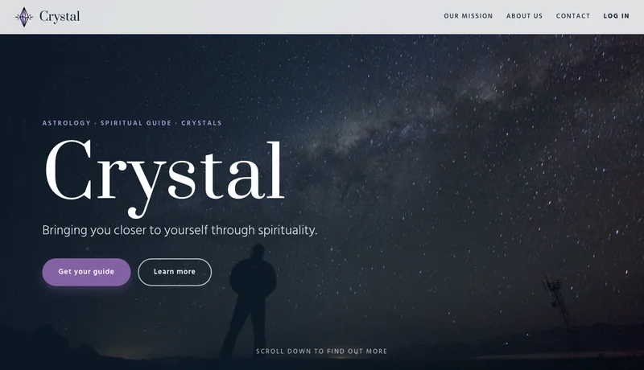
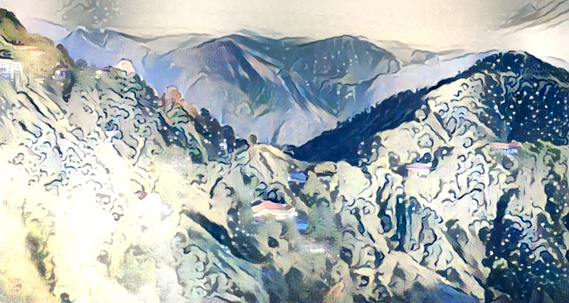

Isaac is a Senior Software Engineer at AT&T, where he has spent 4+ years
building and operating data and platform tooling: high-throughput ETL pipelines,
REST integrations, and the internal tools that keep them running.
He likes making systems faster and delivery simpler, and he backs that up with
clear documentation, code review, and mentoring across teams.
Education
Georgia Institute of Technology
B.S. in Computer Science with Honors, December 2021
Concentrations: Artificial Intelligence and Human-Computer Interaction
Spoken languages
Spanish (native)
English (fluent)
Leadership
NCAA Division I Student-Athlete, Georgia Tech Cheerleading
Team, 2019–2021
President, Pi Kappa Phi, Iota Master Chapter, 2020–2021
Soil Engineer Leader, Dunda School Reconstruction,
Uttarakhand, India, 2014–2016
Projects
Selected work, from data-platform automation to personal projects.
Case Study
AT&T drift detection and auto-remediation
2022–present
React
REST/JSON
ServiceNow Table/REST APIs
A system that keeps AT&T’s Common Information Model documentation and the
ServiceNow Inventory Model schema in sync, with a person approving every change.
Problem
The documented model and the system schema are maintained separately, so they
drift apart: a field added or changed on one side goes unnoticed on the other.
Catching every difference by hand is slow.
Architecture
Parse the model documentation into canonical JSON.
Compare it with the system schema using a structural diff.
Review each difference in a React interface built for human approval.
Update the documentation or the system through their APIs once a
change is approved.
Record every difference, decision, and update in a full audit history.
Outcomes
Measured results from Isaac’s data-platform work at AT&T:
92%faster ETL: record processing cut from 37 hours to 3 hours through in-memory caching.
<1 weekto production for new data sources: a self-service pattern cut the wait from 3–6 weeks to under one week.
Shared at a public level only: no internal code, screenshots, or data.
Halee McCray portfolio
2025
React
SCSS
GSAP
EmailJS
GitHub Pages
A responsive portfolio for Halee McCray, designed and built in React with SCSS
styling and GSAP animations. EmailJS handles client contact, and SEO and performance
tuning keep the site quick to load and easy to find.
A spiritual guide and crystal shop built around each user’s birth chart. Isaac
founded the project and built the full-stack web app from scratch: HTML, CSS,
JavaScript, and PHP over a MySQL database that manages user data and authentication.
He extended it to iOS and Android with React Native and demoed the prototype at
Georgia Tech’s Idea to Prototype expo.

The running prototype’s home page, shown in 1-bit: point at it to peek, or tap it or
press Full color to see the whole screen in color. Background photo by ESO/A. Fitzsimmons,
CC BY 4.0.
A TensorFlow convolutional neural network that reconstructs one image in the
artistic style of another, following Gatys, Ecker, and Bethge’s neural algorithm of
artistic style. Varying the training from run to run produces one-of-a-kind art
pieces.

Top: the content photograph and the style painting. Bottom: the network’s
reconstruction of the photograph in that style. Shown in 1-bit: point at an image to
peek, or tap any of them or press Full color to see all three in color.
tmux-pane-clarity
2024
tmux
Shell
Python
Rust
Neighboring tmux panes share their borders, so it is hard to see at a glance which
pane is active. This tmux plugin draws thin, complete frames around panes without
changing your theme’s backgrounds or text colors: a framed zoom by default, or
every pane framed by a small Rust layout engine. It restores any bindings and
options it replaces when it is unloaded.